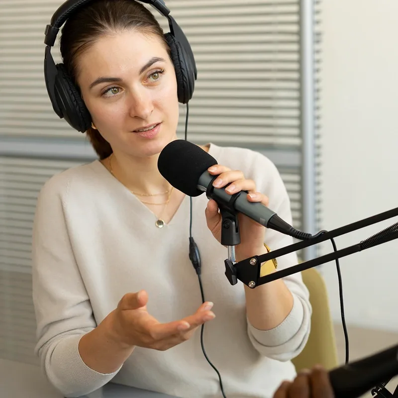

Hidden
GEMS
Conversations with the women shaping science, told in their own words.

Why we started a podcast
Most students can name a dozen male scientists and struggle to name one woman working in STEM today. Hidden GEMS exists to fix that. Each episode is a long-form conversation with a woman who is actually doing the work — a professor, a researcher, a PhD student, an engineer — about how she got there, what her day looks like, and what she wishes someone had told her at sixteen. Past guests include South Korea's first female PhD in electronic engineering and an applied physicist from Harvard University.
What it is
A long-form interview podcast hosted by GEMS members. Honest conversations with women in STEM about the path, the doubts, and the work itself.
Who it's for
Middle and high school students wondering if STEM is for them. Parents looking for role models. Anyone who learns by listening.
Who guests are
PhD researchers, software engineers, biotech founders, undergrads, professors — women at every stage of a STEM career.
Latest episode
All episodes
No episodes in this field yet.
Episodes are free for signed-in members.
Know someone we should talk to?
We're always looking for women in STEM with a story worth hearing — at any career stage, in any field, anywhere in the world. If that's you or someone you know, send us a line.
Suggest a guest